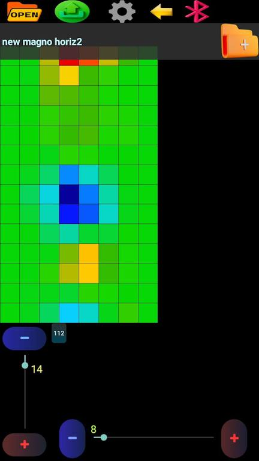
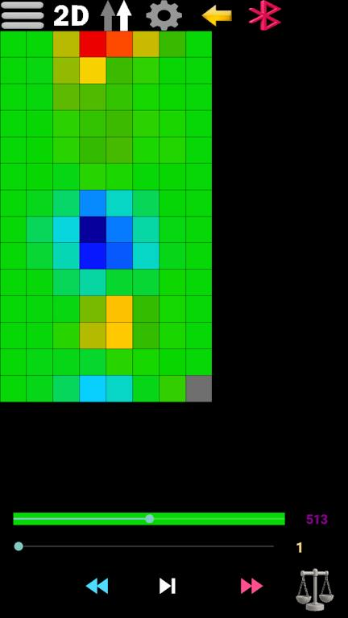
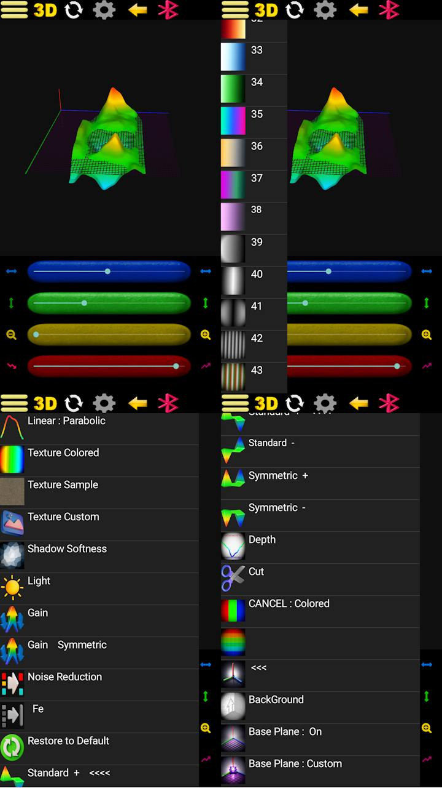
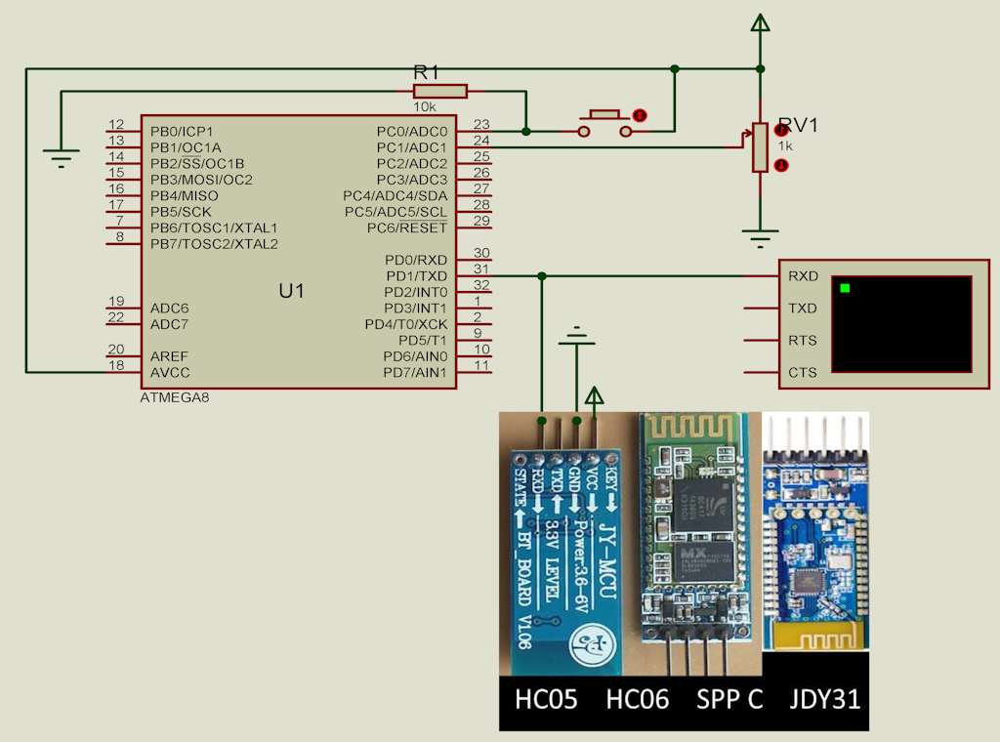
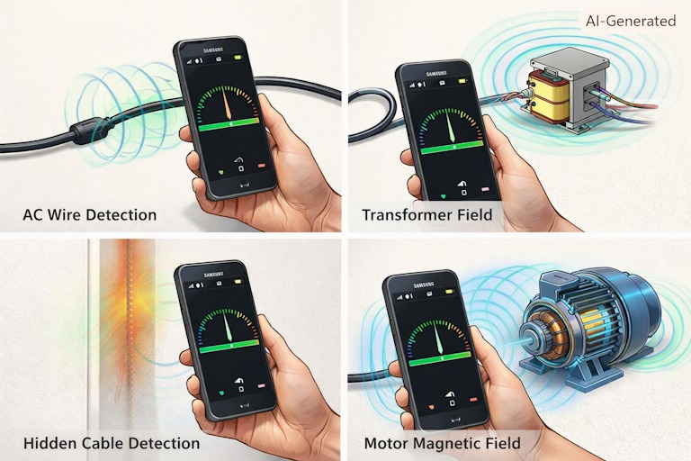
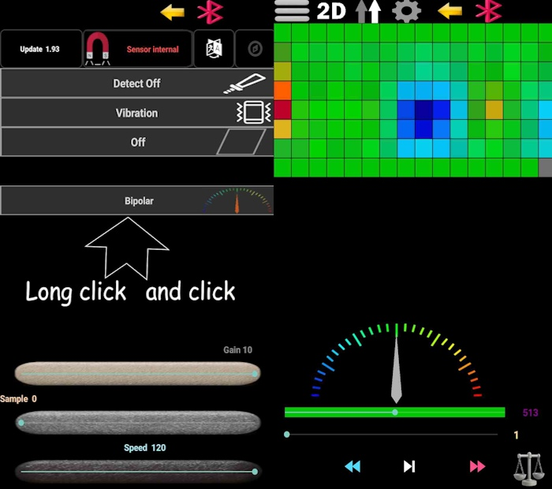

AnyScan209 – Free 3D Ground Scanner & Magnetometer App for Android
AnyScan209 is a professional free Android magnetometer app that transforms your smartphone into a powerful 3D ground scanner. Designed for geophysical surveys, magnetic field visualization, and subsurface anomaly detection, this app supports both internal smartphone sensors and external Bluetooth modules like HC-05.
With AnyScan209, you can perform 2D and 3D subsurface mapping, export data in OBJ, STL, and CSV formats, and analyze magnetic field variations with precision. Whether you're a researcher, educator, or hobbyist, this free ground scanner app provides professional-grade geophysical analysis tools right on your Android device.
Video: AnyScan209 tutorial – how to use the 3D ground scanner and magnetometer app for Android.
1. How to Create a Scan File in AnyScan209
The AnyScan209 3D ground scanner features three main screens. To create a scan file, select the required dimensions using the longitudinal and transverse bars. The supported scan size range is from 8×8 up to 100×100 points, allowing detailed subsurface mapping and magnetic field analysis.
Enter a file name if required and select the Create Scan option. The top menu includes Open Scan, Export (OBJ, STL, CSV), and Bluetooth transfer options. Long-press the Bluetooth icon to adjust communication speed for external sensors. Use Settings to configure sensors, language, and device connection.

2. Scan Screen Operations and Data Recording
Use the phone back button or the top navigation arrow to enter the scan screen. The menu provides New Scan, 2D/3D mode selection, and scanning direction options for flexible geophysical data collection.
The navigation controls allow movement through grid cells without recording. Press Record to save measurements. Long-press the Record button to enable automatic timed recording – perfect for systematic magnetic field surveys.
After completing a scan, choose Direct Save for original data or Enhanced Save for improved visualization processing.

3. 2D Visualization Features for Magnetic Field Analysis
The 2D menu provides different visualization tools including:
- Smoothing – reduce noise in magnetic field data
- Color palettes – customize visual representation
- Amplification modes – enhance subtle variations
- Noise reduction – improve signal clarity
- Grid display – precise spatial reference
- Zoom functions – detailed analysis of specific areas
Users can compare different visualization modes to better analyze magnetic field variations and data patterns in their subsurface scans.

4. 3D View and Advanced Visualization Settings
The 3D viewer allows:
- Rotation – examine data from any angle
- Movement – navigate through the 3D space
- Depth adjustment – focus on specific subsurface layers
- Lighting control – enhance visual clarity
- Texture selection – customize surface appearance
- Different map display modes – choose the best representation for your data
Long-press the rotation control to enable automatic rotation for dynamic presentations. The viewer supports different presentation modes for easier interpretation of collected magnetic field data.

5. Export and Data Transmission Formats
AnyScan209 supports data export and real-time streaming in multiple formats for maximum compatibility with analysis software:
- OBJ: Best for advanced 3D modeling and rendering software.
- STL: Ideal for 3D printing applications to generate physical topographic relief maps of underground anomalies.
- CSV: Standard spreadsheet formatting used for tabular data analysis in Microsoft Excel, MATLAB, or Voxler.
- Real-Time Bluetooth Serial Stream: Allows a 1:1 raw data broadcast directly to compatible receivers, such as customized Microsoft Office macros, analytical HTML scripts, or third-party mapping applications with built-in serial communication capabilities.
6. General Settings and Sensor Configuration
The settings menu provides:
- Sensor selection – internal or external (Bluetooth)
- Language selection – English or Persian
- Compass options – for orientation assistance
- Detector sound – audio feedback for measurements
- Vibration feedback – tactile confirmation
- Screen control – power management during long scans
- Visualization assistance tools – for improved data interpretation
The Android magnetometer app supports internal smartphone sensors and external Bluetooth sensor modules like HC-05 and other SPP-compatible devices.

7. Pro Tip: Enhancing Your Scanning Setup
For stable scanning movement, a smartphone holder or selfie stick can be used. A Bluetooth remote controller can also help operate the Record function without touching the phone – ideal for maintaining consistent magnetic field measurements.

8. External Sensor Mode for Advanced Scanning
In External Sensor mode, activate the external option from the Settings page. Using a serial Bluetooth module such as HC-05 or another SPP-compatible device, a microcontroller can send measurement values to AnyScan209.
The communication range is based on values from 0 to 1024. In magnetometer mode, the center balance value is approximately 512. Other sensor types can use the full 0 to 1024 range for various geophysical measurements and magnetic field detection.

9. Schematic Diagram – External Sensor Connection

10. Microcontroller Integration: BASCOM to Arduino
Original BASCOM Code
$regfile = "m8adef.dat"
$crystal = 8000000
Config Adc = Single , Prescaler = Auto , Reference = Avcc
Enable Interrupts
Config Portc.0 = Input
Config Portc.2 = Output
Dim Insw As Bit
Dim Vale As Word
Do
If Pinc.0 = 0 And Insw = 1 Then
Insw = 0
Portc.2 = 0
End If
If Pinc.0 = 1 And Insw = 0 Then
Portc.2 = 1
Insw = 1
Vale = Getadc(1)
Print Vale
End If
Loop
Converted Arduino C++ Code
// BASCOM PortC.0 → Arduino input pin
const int switchPin = A1;
const int outputPin = 2;
bool lastSwitchState = false;
int analogValue = 0;
void setup() {
Serial.begin(9600);
pinMode(outputPin, OUTPUT);
pinMode(switchPin, INPUT);
digitalWrite(outputPin, LOW);
}
void loop() {
bool currentSwitchState = digitalRead(switchPin);
if (currentSwitchState == LOW && lastSwitchState == HIGH) {
lastSwitchState = LOW;
digitalWrite(outputPin, LOW);
}
if (currentSwitchState == HIGH && lastSwitchState == LOW) {
digitalWrite(outputPin, HIGH);
lastSwitchState = HIGH;
analogValue = analogRead(A1);
Serial.println(analogValue);
}
}
Alternative Version with Pull-up Enabled
// Arduino code with INPUT_PULLUP enabled
const int switchPin = A1;
const int outputPin = 2;
bool lastSwitchState = false;
int analogValue = 0;
void setup() {
Serial.begin(9600);
pinMode(outputPin, OUTPUT);
pinMode(switchPin, INPUT_PULLUP);
digitalWrite(outputPin, LOW);
}
void loop() {
bool currentSwitchState = digitalRead(switchPin);
if (currentSwitchState == LOW && lastSwitchState == HIGH) {
lastSwitchState = LOW;
digitalWrite(outputPin, LOW);
}
if (currentSwitchState == HIGH && lastSwitchState == LOW) {
digitalWrite(outputPin, HIGH);
lastSwitchState = HIGH;
analogValue = analogRead(A1);
Serial.println(analogValue);
}
}
Proteus File Download
11. Magnetometer Sensor Guide for AnyScan209
This table provides information about smartphone magnetometer sensors and their general characteristics for magnetic field analysis using AnyScan209.
| Manufacturer | Sensor Model | Sampling Rate | Resolution | Noise Level | Example Devices |
|---|---|---|---|---|---|
| MEMSIC | MMC5616WA | 1000 Hz | 0.00625 µT/LSB | Very Low | Check device specifications |
| AKM | AK09973D | Up to 2000 Hz | High sensitivity | Medium | Selected Samsung, Xiaomi and Sony devices |
| Yamaha | YAS537 | 200 Hz | 0.15 µT/LSB | Very Low | Samsung Galaxy S6, S7, Note series |
| Yamaha | YAS539 | ~200 Hz | 0.12 µT/LSB | Very Low | Samsung Galaxy A series devices |
| Alps Alpine | HSCDTD015A | 200 Hz | 0.075 µT/LSB | Low | Used in some modern smartphones |
| STMicroelectronics | LIS3MDL | 1000 Hz | Medium | Medium | Motorola, Nokia and LG devices |
⚠️ Why does my flagship phone have a weaker or slower magnetometer sensor?
Most flagship smartphones use high-quality 16-bit magnetometer sensors with excellent precision and fast sampling rates. However, you may notice that a mid-range or budget device (e.g., Samsung Galaxy A-series) performs more sensitively or responds faster in certain conditions.
The reason is not the sensor chip itself, but its physical installation environment:
- Wireless charging coils – Many flagship phones include built-in magnets or metal rings for wireless charging alignment. These permanent magnets create a constant magnetic offset that can interfere with the magnetometer.
- Metal bodies and frames – Premium devices often use metallic back covers or chassis. Ferromagnetic materials can distort the surrounding magnetic field and affect sensor readings.
- Sensor placement – In some budget-friendly phones (like Samsung A-series), the magnetometer is mounted farther away from magnetic interference sources and housed in a plastic body, resulting in a cleaner, more responsive signal.
Bottom line: The sensor itself is rarely the problem. Installation conditions, nearby magnets (from wireless charging), and metallic components play a much larger role in real-world performance. Always test your device in a magnetically clean environment for the best results.
Tip: To view information about your phone's magnetometer sensor, open Settings, go to the Update section, and select Sensor internal : help.
12. Use Your Smartphone as a Magnetic Field Detector
How to Use the Gauge and Graph Features
In AnyScan209, switch to Internal Sensor mode. Press and hold the sensor option to open advanced settings, then enable the Graph and Gauge features. Select the Bipolar Gauge display mode for real-time magnetic field visualization.
Return to the scan screen and bring your smartphone close to a device that produces a magnetic field, such as:
- Current-carrying wires
- Transformers
- Relays
- Solenoids
The gauge will respond to changes in the surrounding magnetic field. Alternating magnetic fields from AC electrical systems can cause the indicator to move in both directions, allowing visualization of magnetic field changes. DC magnetic fields may cause the indicator to move in one direction depending on the field orientation.
Educational and Practical Applications
- Educational experiments – demonstrate magnetic field principles
- Magnetic field visualization – observe field patterns in real-time
- Locating areas with stronger magnetic interference – identify sources of electromagnetic noise
Note: To locate wiring paths behind the wall, you need a good excitation field. It is recommended to have a high-power load—such as an electric heater or an electric kettle—at the end of the circuit so that a suitable inductive field is generated around the wires.
13. Practical Tips for Detecting Wires and Conduits Behind Walls
The method described above works best for cables or wires inside PVC or non-metallic conduits at shallow depths (a few centimeters). Since the magnetic field from AC current can penetrate plastic pipes, your phone's magnetometer can detect the alternating field and help trace the wiring path.
For metal conduits (steel or galvanized):
You do not need any current flowing through the wires inside the pipe.
Even with no load at the end and no current passing through, the metal conduit itself creates a detectable magnetic anomaly.
Because steel and galvanized pipes are ferromagnetic materials, they disturb the magnetic field around them.
When you move your phone over a metal conduit, the magnetometer needle will deflect to one side (a static offset) simply due to the pipe's own magnetic signature.
- PVC / non‑metallic pipes: Require a high‑power load (heater, kettle) to generate a strong AC magnetic field.
- Metal (steel/galvanized) pipes: Detectable even with no current – the pipe itself creates a magnetic disturbance.
- Detection depth is limited to a few centimeters for most smartphone magnetometers.

Please note that Android devices use different magnetometer sensors. The performance of magnetic field measurements depends on the quality and specifications of the sensor installed in each phone.

14. Frequently Asked Questions About AnyScan209
Is AnyScan209 completely free to download and use?
Yes, AnyScan209 is 100% free to download and use. There are no hidden charges, in-app purchases, or premium versions. The app provides full functionality including 3D ground scanning, magnetic field visualization, and data export without any cost.
Does AnyScan209 work with external sensors?
Yes! AnyScan209 supports external Bluetooth sensors such as HC-05 modules and other SPP-compatible devices. This makes it ideal for custom geophysical surveys and magnetic field measurements using specialized hardware.
What data formats can I export from AnyScan209?
AnyScan209 supports export in three formats: OBJ for 3D models, STL for 3D printing applications, and CSV for data analysis in spreadsheets and scientific software. All formats include magnetic field data and spatial coordinates.
Which Android devices are compatible with AnyScan209?
AnyScan209 works on any Android device that has a built-in magnetometer sensor. Most modern smartphones include this sensor. For best results, use devices with high-quality sensors like those listed in the sensor guide above.
Can I use AnyScan209 for professional geophysical surveys?
Absolutely! AnyScan209 is designed for both educational and professional use. Its 2D/3D visualization, data export, and external sensor support make it suitable for geophysical surveys, subsurface mapping, and magnetic field analysis in various fields.